Итак, добро пожаловать на официальный сайт 2g2m! Здесь почти нет ничего интересного, но для новичков сервера он будет полезен (А ещё мне стало скучно, и я решил сделать сайт)
Начнём с основной информации. 2g2m — Пати в игре Pony town, на 18+ сервере. Идея этого сервера — создать анархию 2b2t в pony town. Создать пати, в котором почти не будет правил, карта никогда не будет очищена и где можно делать, всё что угодно (Не путать с пати "строй что хочешь", хотя ты и можешь строить всё что угодно). Пати существует уже приметно 1,5 года
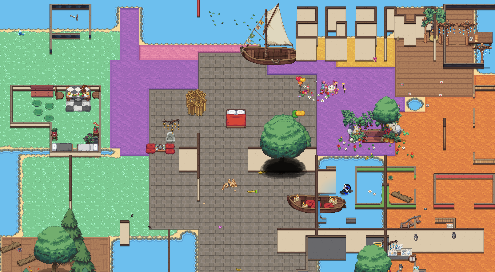Сервер был создан двумя друзьями Польшей (более известен как Шио) и Фаянсом. Они долгое время рейдили пати "сходки фандомов" со скинами Дерева и Находкинса (из мультфильма "Лоракс"). В какой-то момент им пришла идея создать "карту веселья", позже названая анархия "2G2M" (обязательно большими буквами). Сейчас анархия называется 2g2m (уже с маленькими буквами)
Несмотря на то, что это анархия. На ней есть одно правило и две рекомендации Главное правило 2g2m — "Если владельцы посчитают нужным кикнуть игрока, то его кикают", и рекомендации: "Не очищать и не просить очищать карту, так как она никогда не будет очищена" и "не писать Шио и Мудрому дереву в лс по поводу проблем."
Фанаты 2g2m не только устаивают хаос на карте, но и устаивают рейды на другие пати. Именно с рейдов разных "сходок фандомов" и появилась идея создать анархию в пт. Да, их было немного, но самая известная анархия, которую зарейдил 2g2m, это "анархия" "Колесница"
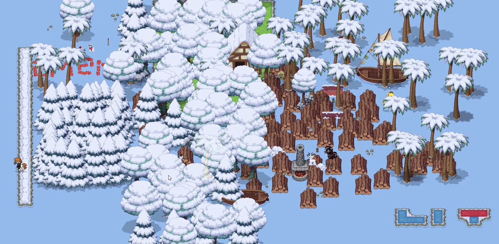В этом отделе рассказывается история 2g2m. О том, когда его создали, и какие знаменательные события произошли за всю его историю
История пати 2g2m начинается с двух друзей. Сейчас их называют Польшей и Фаянсом, но тогда они были деревом и Находкинсом. Одно время они постоянно искали пати "сходка фандомов", чтобы их зарейдить от скуки. И они зарейдили примерно 4-5 таких пати

Точно не известно, когда им пришла идея создать анархию, но самое старое фото было сделано 28 июля 2023 года. Эта дата и считается, как день рождения 2g2m. Тогда она называлась "картой веселья". Спустя пару дней, она была названа как 2G2M
Спустя какое-то время Фаянс предложил Польше перезапустить анархию. Точно не известно, в чём же были изменения, но по воспоминаниям, после перезапуска было добавлено единственное правило 2g2m, карта была перезапущена, и стала как огромное фиолетовое плато с кораблём посередине
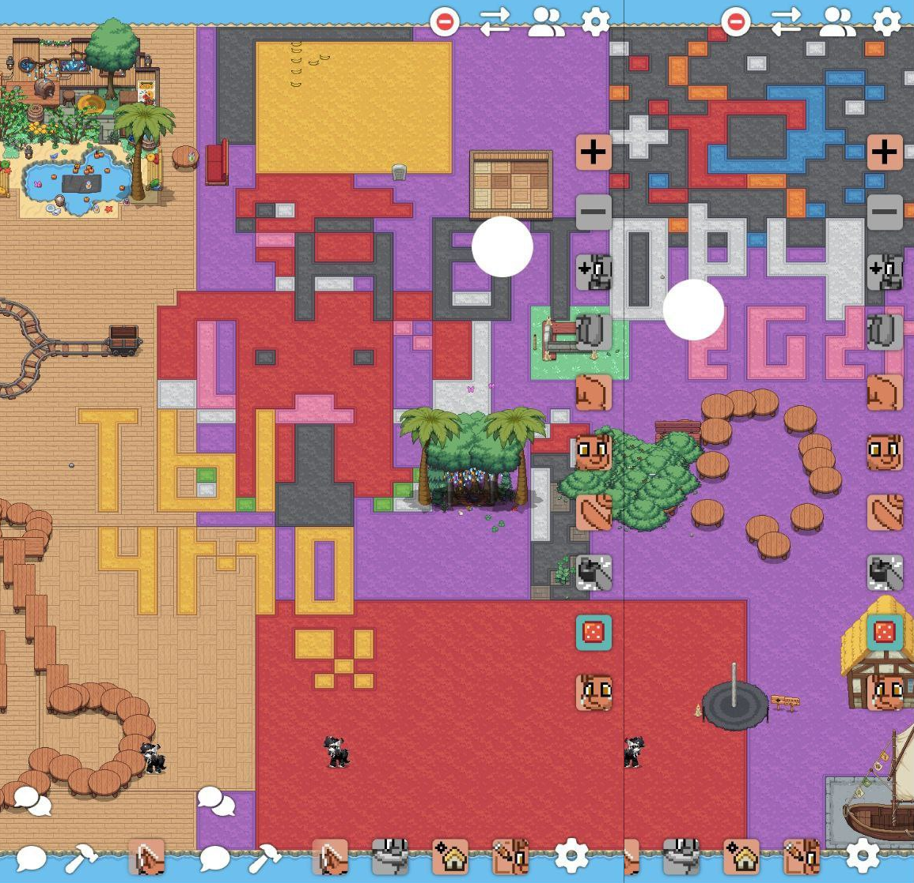В то время, наборы проводились редко. А именно только когда два админа свободны. Так же наборы в то время проводились вручную, что быстро утомляло, так как что тогда, что сейчас, на сервер заходило очень мало игроков
Шестого августа 2023 года был создан телеграм канал 2g2m. И вплоть до 25 августа 2024 года в него ничего не публиковалось
Но, в какой-то момент, наборы перестали появляться. Это произошло из-за занятости админов, очень долгого и муторного набора, а так же из-за надоедания игры в pony town. Иногда, на 2-3 дня проскакивали наборы по 10 минут, в течение года, но 2G2M в то время, можно сказать, умер
И вдруг, совершенно неожиданно, приблизительно 23-24 августа 2024 года, анархия возрождается. Но, наборы шли так же по 5-10 минут. Наборы буквально выматывали, и становилось ясно, что нужно как-то автоматизировать добавление игроков. Из-за этого выматывания, Польша буквально матерился на игроков, из-за чего он добавил пару фраз с оскорблением и обзывательством игроков, что и стало одной из фишек пати
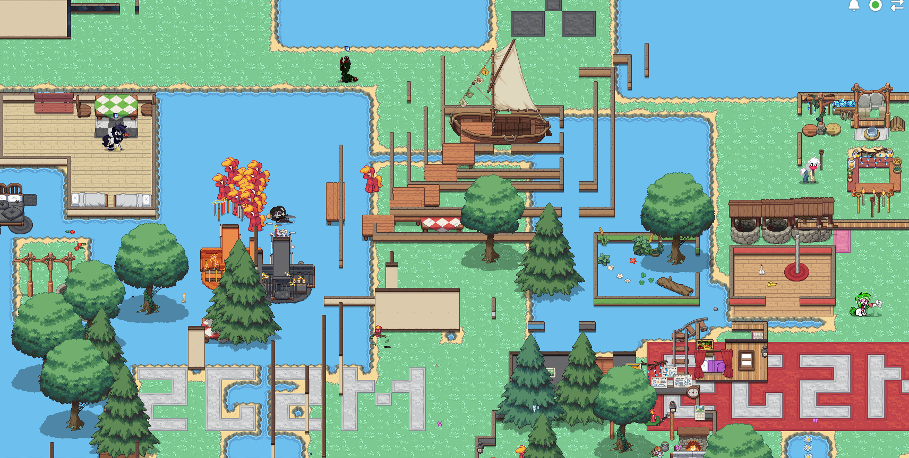Итак, пати возродилось. И для того чтобы оно продолжало жить, нужно было предпринять какие-то меры. И Польше пришла гениальная идея, которая оставила жизнь в пати по сей день
Точно не известно, когда именно появился макрос в пати, но точно известно, что изначально он только писал текст. Игроков приходилось добавлять вручную
Именно с момента создания макроса начинается новая история 2g2m, которая продолжается по сей день
22 сентября 2024 года появился грибочек Флаффи. Он подразумевался, как эксперимент, сколько часов, дней, а может месяцев, он сможет простоять. В итоге, он простоял на сервере вплоть до 2 октября 2024 года. Было достаточно грустно, так как к нему уже успели привязаться. По итогу он стал маленькой легендой 2g2m
Также у Флаффи была последовательница. Маргаритка по имени Маргарита. Но к сожалению она не прожила и двух дней. Но это ей не помешало стать легендой, такой-же, как и Флаффи
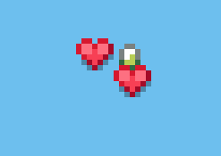Так как в одиночку проводить голосования было не удобно, 10 октября 2024 года, Польше пришла идея создать систему модераторов. Пока это была просто идея, но в будущем она реализуется
Следующий маленький отсек будет посвящён "анархии" Колесница. Она прожила всего лишь день, так как 2g2m успешно её зарейдил и объяснил её создателям, что такое анархия
История "анархии" Колесница начинается, когда очередному игроку не понравилось, что некоторые игроки ему мешали, а их никто не кикал. По итогу, он начал созывать людей создать другую анархию. Всё это звучала как революция, и создания конкурента 2g2m
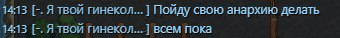И вот, спустя какое-то время, рядом с кораблём начался набор игроков на анархию "Колесница". После небольшой разведки на этой анархии, выяснилось что на этой анархии есть ряд правил, который делает эту анархию не анархией. По итогу было решено начать рейд на этот сервер
К счастью, именно в этот день Фаянс пришёл в гости к Польше. На рейд позвали всех подписчиков тгк, но пришёл только один. В течении рейда, мы старались максимально засрать карту, ломать всё что можно. 2g2m придерживался мысли, что раз это анархия, тот тут можно делать всё. По окончанию рейда Польша объяснил админам Колесницы, что такое анархия. После этого Колесницы не было замечено.
Именно после этого рейда, и появилась система модераторов
1 ноября 2024 года на сервере проводился ивент среди подписчиков тгк. А именно, игрокам выдавали абсолютно все права. Но к сожалению никто не пришёл. Ивент решили перенести на 2 ноября, но к сожалению зашёл только один игрок, и ивент был отменён :(
Но наборы продолжались
14 ноября 2024 года, был создан по приколу скин для Шио под названием "медный купорос". Он был создан по образу скина "дерева" которое использовал Польша, когда они проводили свои первые рейды. Позже, дерево стало использоваться вместо Шио, и поменяло цвет кроны сначала на розовый, а позже на красный
15 ноября 2024 года на сервере появился первый модератор – Сун (ну или °•·.🐝). Позже он станет одним из главных модераторов, и так скажем "Старшим модератором" на сервере
Хоть и немного ленивый :)
17 ноября 2024 года, конкретно не понятно из-за чего (возможно из-за присутствия оскорблений в созыве) Пони таун кинул предупреждение на Польшу. Из-за чего пришлось немного смягчить текст созыва, чтобы акк Польши не был забанен
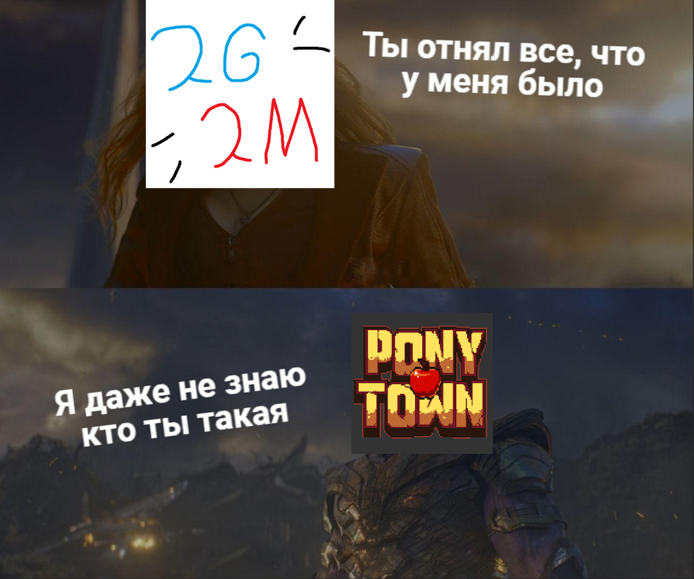В этот же день Фаянс создал онлайн доску, на которой каждый мог что-то рисовать. К сожалению не сохранилась фотка всей доски, но пару фоток сохранилось. Вот одна из них. Позже, 9 декабря 2024 года Фаянс создаст ещё одну доску, но с неё фоток не осталось (да и по воспоминаниям, там не так уж и много рисовали). Сейчас Фаянс периодически создаёт доски, на которых так же можно рисовать всё что угодно
10 декабря 2024 года, для того, чтобы не занимать основной пк Польши под наборы, Польша купил мини пк, который он называет "сервером"
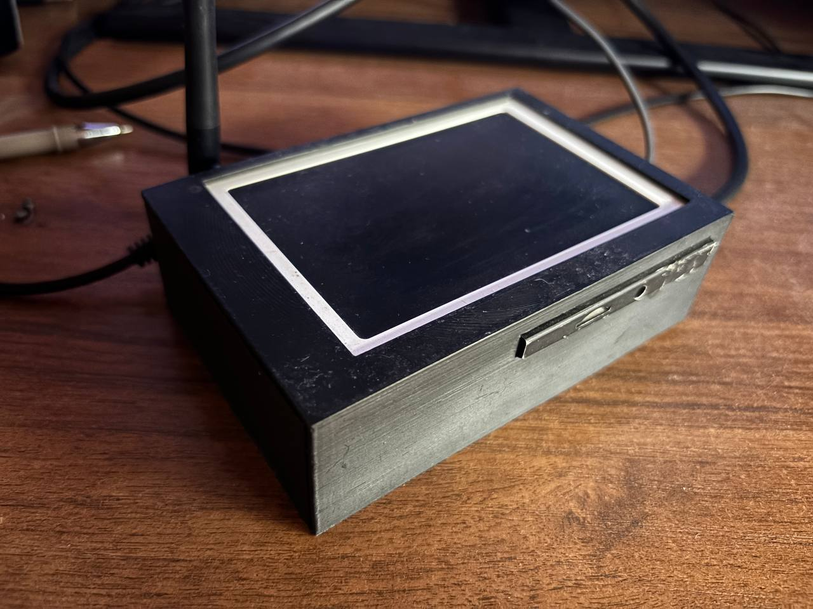
13 декабря 2024 года Фаянс объявляет о новогоднем ивенте, который должен был проводиться 30 декабря. Польша и Фаянс уже всё подготовили, но из-за маленькой неорганизованности и из-за того, что почти никто не пришёл на ивент 30 декабря, его перенесли на 31 декабря. Но людей так же не прибавилось и, к сожалению, владельцам пришлось перенести этот ивент на неопределённый срок
9 декабря 2024 года Фаянс написал пост о том, что если под этим постом соберётся 18 реакций, то Польша и Фаянс спалят свои руки. Позже, 22 декабря 2024 года под этим постом собралось 18 реакций, из-за чего они спалили свои руки, а позже и ноги
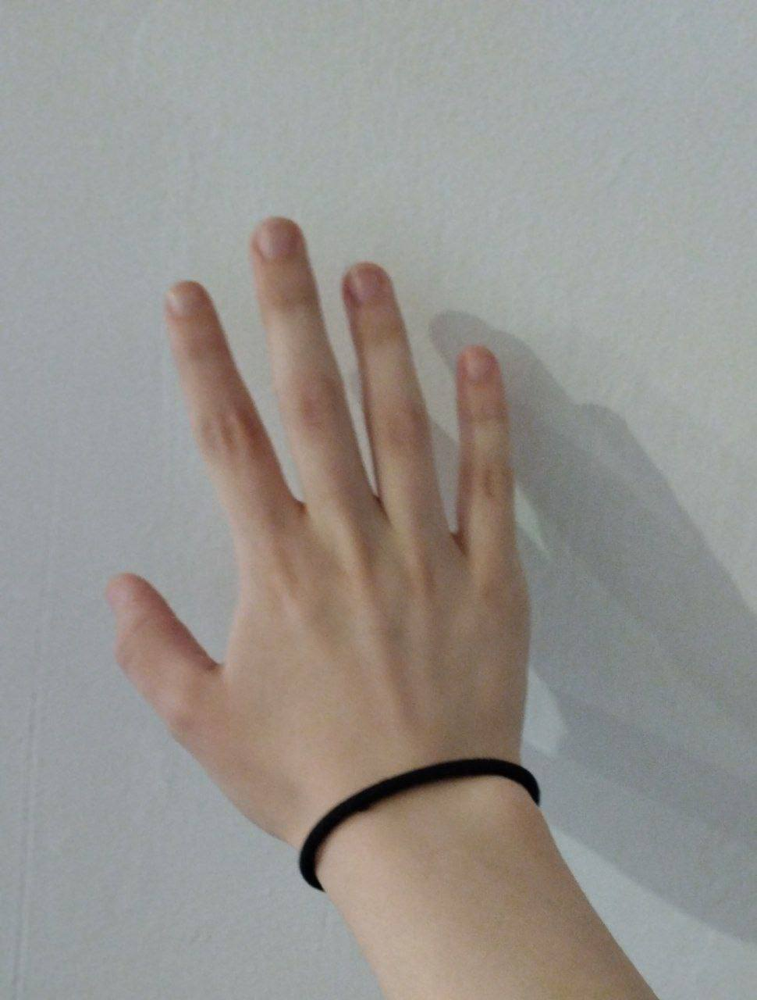 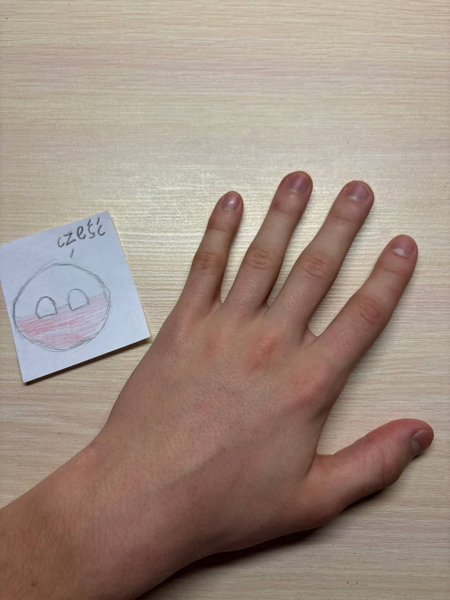29 декабря 2024 года у Польши и Фаянса появился канал, где они публикуют всякие вещи, которые не относятся или же почти не относятся к пати
В новом году, 4 января 2025 года, после одного случая владельцы серьёзно задумались об удалении единственного правила. На тот момент единственное правило 2g2m звучало так:"игрока, против которого весь сервер, кикают, но если хоть один человек не против игрока, то его не кикают". В один из дней, владельцы заметили, что когда набор заканчивался, а игроки оставались на сервере по сути безнаказанными, они начинали устраивать хаос, вместо стройки рая. После этого случая, был создан опрос об "удалении единственного правила"
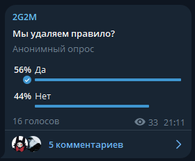13 января 2025 года Польша решил провести эксперимент, в ходе которого на сервере отсутствовало правило. И если в течение эксперимента ничего бы произошло такого, из-за чего пришлось бы вернуть правило, правило пропало бы навсегда. И к счастью для анархистов, в течение недели ничего такого не произошло, из-за чего 20 января 2025 года на сервере правило было отменено! Но на всякий случай было создано новое правило, которое не обязывает владельцев кикать игроков, но если они захотят, то кикнут. Этот день стал одним из праздников на 2g2m
С 1 февраля 2025 года на сервере произошла некоторая рокировка. Для того чтобы люди больше не называли Польшу как "Шио", Польша был вынужден поменять местами Шио и Польшу. Поменялись местами только скины, аккаунты остались на месте. Так же скин Шио был к тому же обновлён
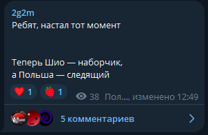5 февраля 2025 года, на сервере, спустя несколько тестов, появилось время, в которое всегда заканчивается набор. Теперь с этого дня сервер заканчивает набор ровно в 00:00 по МСК
На данный момент это вся история 2g2m, но сервер продолжает существовать, и история будет продолжаться!
В данном отделе созданы разные мини игры, которые помогут скоротать время, и просто устроить себе челлендж
(Ну и мне будет что по программировать)
Взлом жопы.ru
Поймай Фаянса!
Очисть лимит
Сосчитай пенисы
Если ты программист и хочешь добавить свою игру на сайт, или хочешь предложить идею для игры, то вот мой тг, где мы сможем это обсудить: @Polska_Idk
Добро пожаловать в мини-игру
"Взлом жопы.ru"
Взлом жопы.ru
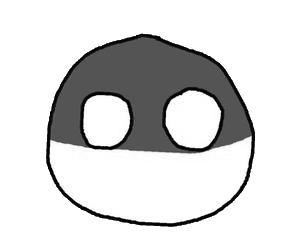
Этот так скажем "прикол", был создан Польшей, как чисто проверка своих возможностей. И по итогу он выпустил этот сайт в тгк 2g2m чтобы люди посмотрели и по прикалывались. Данная версия слегка обновлена
Добро пожаловать в мини-игру
"Поймай Фаянса"

dghfghfdgh
Как играть: успей нажать на Фаянса, пока он не пропал. Получи как можно больше очков
Эта игра иронизирует то, что второй владелец "Фаянс" заходит очень редко и не надолго. И тебе нужно успеть его поймать, чтобы получить одно очко
Добро пожаловать в мини-игру
"Очисть лимит"
лимит: 1100/1100 Очищенных лимитов: 0
Как играть: нажимай на заспамленные камни, чтобы они удалялись, и ты смог очистить лимит. При нажатии на кнопку "заполнить лимит" лимит заполнится автоматически. Цель – очистить лимит как можно больше раз. Лимит считается очищенным, когда лимит, состоящий из 1100 объектов, стал состоять из 100 объектов
Эта игра показывает некоторым игрокам, как же бесит не только владельцев, но и простых игроков, наспамленные в одном месте объекты.
Добро пожаловать в мини-игру
"Сосчитай пенисы"
Время до перезагрузки: 5 сек
Пенисов тут:
Правильных ответов: 0
Как играть: смотри на карту и считай сколько пенисов на ней. Затем впиши получившееся число в поле "Пенисов тут". Важно успеть это сделать до перезагрузки, которая происходит каждые 5 секунд. При правильном ответе увеличивается количество правильных ответов. Цель – посчитать правильно количество пенисов как можно больше раз.
Эта игра была придумана одним из модераторов, и по его идее была создана эта игра. Все пенисы были созданы игроками во время так называемого "дня пенисов". Он проходил 22 февраля 2025 года
В данном отделе находятся разные ссылки, по которым вы можете перейти, подписаться, поддержать и т.д.
Наш основной тгк
Наш DonationAlerts
Наши анонимные сообщения
Наш канал про жизнь
А это дерево (просто дерево)
Если у вас есть какие-либо вопросы, советы, пожелания и так далее, то вот наши контакты в тг:
- Создатель сайта
- Отвечающий за тех. часть пати
- Отвечающий за наборы
- Программист
- Телеграм: @Polska_Idk
- Художник
- Просто чиловый парень
- Телеграм: @Maroy2